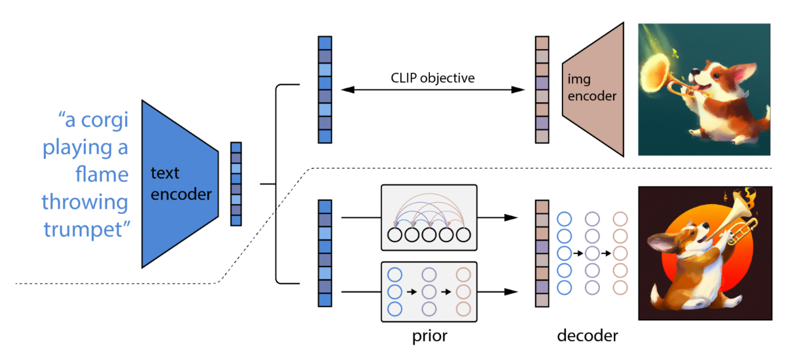
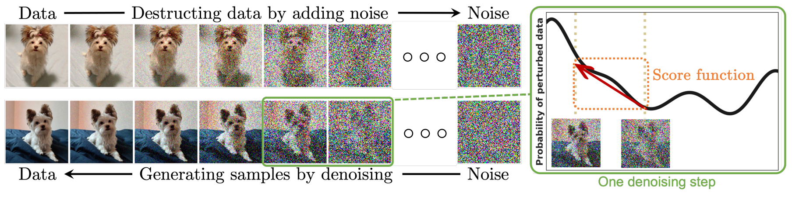
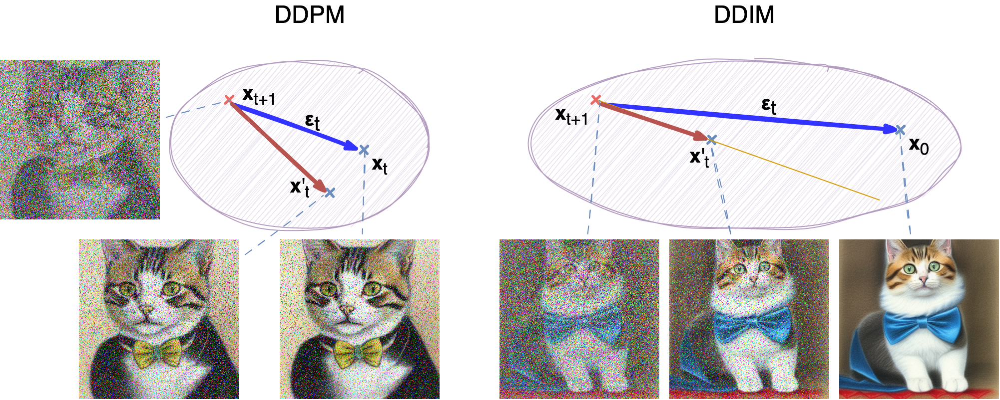

Advanced machine learning
CLIP, flows, and diffusion
Alex Avdiushenko
April 2, 2024
Contrastive Language–Image Pretraining (CLIP)

It is a neural network model developed by OpenAI in 2021 that connects the power of vision and language models.
- We create universal latent space for texts and images
- Contrastive pretraining is the next step after Triplet loss
- Two transformers: one for texts and another one for images (Vision Transformer, Dosovitsky et al., 2020)

CLIP becomes a very popular source of joint embeddings, for instance, for DALL-E 2:
Normalizing Flows
Normalizing flows offer a way to construct complex distributions by starting with a simple distribution (like Gaussian) and applying a sequence of invertible transformations.
Why are Normalizing Flows useful?
In the field of Machine Learning, normalizing flows are used to help deep generative models describe complex data. They provide an elegant solution to learning, calculating, and sampling from rich, expressive distributions, which is challenging with other methods.
Flow-based Deep Generative Models, Lilian Weng Blog
The multivariable version has a similar form:
$$ p_1(z_1) = p_0(f^{-1}(z_1)) \left|\det \frac{df^{-1}}{dz_1}\right| $$Then let’s convert the equation to be a function of so that we can do inference with the base distribution:
$$ p_i(z_i) = p_{i-1}(f^{-1}_i(z_i)) \left|\det \frac{df^{-1}_i}{dz_i}\right| = \text{ According to the inverse func theorem } = \\ = p_{i-1}(z_{i-1})) \left|\det \frac{df^{-1}_i}{dz_{i-1}}\right| \\ \Rightarrow \log p_K(z_K) = \log p_0(z_0) + \sum\limits_{k=1}^K \log \left|\det \frac{df^{-1}_k}{dz_{k-1}}\right| \underset{\theta}{\to} \max$$
The path traversed by the random variables $\mathbf{z}_i = f_i(\mathbf{z}_{i-1})$
is the flow and the full chain formed by the successive distributions
$\pi_i$ is called a normalizing flow.
Required by the computation in the equation, a transformation function $f_i$ should satisfy two properties:
- It is easily invertible
- Its Jacobian determinant is easy to compute
Models with Normalizing Flows
With normalizing flows in our toolbox, the exact log-likelihood of input data $\log p(\mathbf{x})$ becomes tractable. As a result, the training criterion of flow-based generative model is simply the negative log-likelihood (NLL) over the training dataset $\mathcal{D}$:
$$ \mathcal{L}(\mathcal{D}) = -\frac{1}{\vert\mathcal{D}\vert}\sum_{\mathbf{x} \in \mathcal{D}} \log p(\mathbf{x}) $$RealNVP
The RealNVP (Real-valued Non-Volume Preserving; Dinh et al., 2017) model implements a normalizing flow by stacking a sequence of invertible bijective transformation functions. In each bijection $f: \mathbf{x} \mapsto \mathbf{y}$, known as affine coupling layer, the input dimensions are split into two parts:
- The first $d$ dimensions stay same;
- The second part, $d+1$ to $D$ dimensions, undergo an affine transformation (“scale-and-shift”) and both the scale and shift parameters are functions of the first $d$ dimensions.
where $s(.)$ and $t(.)$ are scale and translation functions and both map $\mathbb{R}^d \mapsto \mathbb{R}^{D-d}$. The $\odot$ operation is the element-wise product. Now let’s check whether this transformation satisfy two basic properties for a flow transformation.
Condition 1: “It is easily invertible.”
Yes, and it is fairly straightforward.
$$ \begin{cases} \mathbf{y}_{1:d} &= \mathbf{x}_{1:d} \\ \mathbf{y}_{d+1:D} &= \mathbf{x}_{d+1:D} \odot \exp({s(\mathbf{x}_{1:d})}) + t(\mathbf{x}_{1:d}) \end{cases} \Leftrightarrow \\ \ \\ \begin{cases} \mathbf{x}_{1:d} &= \mathbf{y}_{1:d} \\ \mathbf{x}_{d+1:D} &= (\mathbf{y}_{d+1:D} - t(\mathbf{y}_{1:d})) \odot \exp(-s(\mathbf{y}_{1:d})) \end{cases} $$Condition 2: “Its Jacobian determinant is easy to compute.”
Yes. It is not hard to get the Jacobian matrix and determinant of this transformation. The Jacobian is a lower triangular matrix.
$$ \mathbf{J} = \begin{bmatrix} \mathbb{I}_d & \mathbf{0}_{d\times(D-d)} \\[5pt] \frac{\partial \mathbf{y}_{d+1:D}}{\partial \mathbf{x}_{1:d}} & \text{diag}(\exp(s(\mathbf{x}_{1:d}))) \end{bmatrix} $$Hence the determinant is simply the product of terms on the diagonal.
$$ \det(\mathbf{J}) = \prod_{j=1}^{D-d}\exp(s(\mathbf{x}_{1:d}))_j = \exp\left(\sum_{j=1}^{D-d} s(\mathbf{x}_{1:d})_j\right) $$So far, the affine coupling layer looks perfect for constructing a normalizing flow :)
Even better, since
(i) computing $f^{-1}$ does not require computing the inverse of $s$ or $t$ and
(ii) computing the Jacobian determinant does not involve computing the Jacobian of $s$ or $t$,
those functions can be arbitrarily complex;
i.e. both $s$ and $t$ can be modeled by deep neural networks
Note: In one affine coupling layer, some dimensions (channels) remain unchanged. To make sure all the inputs have a chance to be altered, the model reverses the ordering in each layer so that different components are left unchanged. Following such an alternating pattern, the set of units which remain identical in one transformation layer are always modified in the next. Batch normalization is found to help training models with a very deep stack of coupling layers.
Masked Autoregressive Flow
Masked Autoregressive Flow (MAF; Papamakarios et al., 2017) is a type of normalizing flows, where the transformation layer is built as an autoregressive neural network. MAF is very similar to Inverse Autoregressive Flow (IAF) introduced later.
Given two random variables, $\mathbf{z} \sim \pi(\mathbf{z})$
and $\mathbf{x} \sim p(\mathbf{x})$ and the probability density function $\pi(\mathbf{z})$ is known,
MAF aims to learn $p(\mathbf{x})$. MAF generates each $x_i$ conditioned on the past dimensions $\mathbf{x}_{1:i-1}$.
Precisely the conditional probability is an affine transformation of $\mathbf{z}$,
where the scale and shift terms are functions of the observed part of $\mathbf{x}$.
Data generation, producing a new $\mathbf{x}$:
$x_i \sim p(x_i\vert\mathbf{x}_{1:i-1}) = z_i \odot \sigma_i(\mathbf{x}_{1:i-1}) + \mu_i(\mathbf{x}_{1:i-1})\text{, where }\mathbf{z} \sim \pi(\mathbf{z})$
Density estimation, given a known $\mathbf{x}$:
$p(\mathbf{x}) = \prod\limits_{i=1}^D p(x_i\vert\mathbf{x}_{1:i-1})$
The generation procedure is sequential, so it is slow by design. While density estimation only needs one pass the network using architecture like MADE. The transformation function is trivial to inverse, and the Jacobian determinant is easy to compute too.
Inverse Autoregressive Flow
Similar to MAF, Inverse autoregressive flow (IAF; Kingma et al., 2016) models the conditional probability of the target variable as an autoregressive model too, but with a reversed flow, thus achieving much efficient sampling process.
First, let’s reverse the affine transformation in MAF:
$$ z_i = \frac{x_i - \mu_i(\mathbf{x}_{1:i-1})}{\sigma_i(\mathbf{x}_{1:i-1})} = -\frac{\mu_i(\mathbf{x}_{1:i-1})}{\sigma_i(\mathbf{x}_{1:i-1})} + x_i \odot \frac{1}{\sigma_i(\mathbf{x}_{1:i-1})} $$If let:
$$ \begin{aligned} & \tilde{\mathbf{x}} = \mathbf{z}\text{, }\tilde{p}(.) = \pi(.)\text{, }\tilde{\mathbf{x}} \sim \tilde{p}(\tilde{\mathbf{x}}) \\ & \tilde{\mathbf{z}} = \mathbf{x} \text{, }\tilde{\pi}(.) = p(.)\text{, }\tilde{\mathbf{z}} \sim \tilde{\pi}(\tilde{\mathbf{z}})\\ & \tilde{\mu}_i(\tilde{\mathbf{z}}_{1:i-1}) = \tilde{\mu}_i(\mathbf{x}_{1:i-1}) = -\frac{\mu_i(\mathbf{x}_{1:i-1})}{\sigma_i(\mathbf{x}_{1:i-1})} \\ & \tilde{\sigma}(\tilde{\mathbf{z}}_{1:i-1}) = \tilde{\sigma}(\mathbf{x}_{1:i-1}) = \frac{1}{\sigma_i(\mathbf{x}_{1:i-1})} \end{aligned} $$Then we would have,
$$ \tilde{x}_i \sim p(\tilde{x}_i\vert\tilde{\mathbf{z}}_{1:i}) = \tilde{z}_i \odot \tilde{\sigma}_i(\tilde{\mathbf{z}}_{1:i-1}) + \tilde{\mu}_i(\tilde{\mathbf{z}}_{1:i-1}) \text{, where }\tilde{\mathbf{z}} \sim \tilde{\pi}(\tilde{\mathbf{z}}) $$IAF intends to estimate the probability density function of $\tilde{\mathbf{x}}$ given that $\tilde{\pi}(\tilde{\mathbf{z}})$ is already known. The inverse flow is an autoregressive affine transformation too, same as in MAF, but the scale and shift terms are autoregressive functions of observed variables from the known distribution $\tilde{\pi}(\tilde{\mathbf{z}})$. See the comparison between MAF and IAF in the following picture.

Comparison of MAF and IAF. The variable with known density is in green while the unknown one is in red.
Computations of the individual elements $\tilde{x}_i$ do not depend on each other, so they are easily parallelizable (only one pass using MADE). The density estimation for a known $\tilde{\mathbf{x}}$ is not efficient, because we have to recover the value of $\tilde{z}_i$ in a sequential order, $\tilde{z}_i = (\tilde{x}_i - \tilde{\mu}_i(\tilde{\mathbf{z}}_{1:i-1})) / \tilde{\sigma}_i(\tilde{\mathbf{z}}_{1:i-1})$, thus D times in total.
| Base distribution | Target distribution | Model | Data generation | Density estimation | |
|---|---|---|---|---|---|
| MAF | $\mathbf{z}\sim\pi(\mathbf{z})$ | $\mathbf{x}\sim p(\mathbf{x})$ | $x_i = z_i \odot \sigma_i(\mathbf{x}_{1:i-1}) + \mu_i(\mathbf{x}_{1:i-1})$ | Sequential; slow | One pass; fast |
| IAF | $\tilde{\mathbf{z}}\sim\tilde{\pi}(\tilde{\mathbf{z}})$ | $\tilde{\mathbf{x}}\sim\tilde{p}(\tilde{\mathbf{x}})$ | $\tilde{x}_i = \tilde{z}_i \odot \tilde{\sigma}_i(\tilde{\mathbf{z}}_{1:i-1}) + \tilde{\mu}_i(\tilde{\mathbf{z}}_{1:i-1})$ | One pass; fast | Sequential; slow |
Flows on practice — for small datasets
- (Bashiri et al., 2021): classification of biological neurons activity
- (Fadel et al., 2021): modeling soccer player's trajectories
- (Frey et al., 2022): for molecule generation
Diffusion models: main idea
Diffusion Models: A Comprehensive Survey of Methods and Applications
Source: What are Diffusion Models? (post of Lilian Weng)
Forward diffusion process
Given a data point sampled from a real data distribution $\mathbf{x}_0 \sim q(\mathbf{x})$, let us define a forward diffusion process in which we add a small amount of Gaussian noise to the sample in $T$ steps, producing a sequence of noisy samples $\mathbf{x}_1, \dots, \mathbf{x}_T$. The step sizes are controlled by a variance schedule $\{\beta_t \in (0, 1)\}_{t=1}^T$:
$$ q(\mathbf{x}_t \vert \mathbf{x}_{t-1}) = \mathcal{N}(\mathbf{x}_t; \sqrt{1 - \beta_t} \mathbf{x}_{t-1}, \beta_t\mathbf{I}) \quad q(\mathbf{x}_{1:T} \vert \mathbf{x}_0) = \prod^T_{t=1} q(\mathbf{x}_t \vert \mathbf{x}_{t-1}) $$The data sample $\mathbf{x}_0$ gradually loses its distinguishable features as the step $t$ becomes larger. Eventually when $T \to \infty$, $\mathbf{x}_T$ is equivalent to an isotropic Gaussian distribution.

The Markov chain of forward (reverse) diffusion process of generating a sample by slowly adding (removing) noise. (Image source: Ho et al. 2020 with a few additional annotations)
A nice property of the above process is that we can sample $\mathbf{x}_t$ at any arbitrary time step $t$ in a closed form using reparameterization trick. Let $\alpha_t = 1 - \beta_t$ and $\bar{\alpha}_t = \prod_{i=1}^t \alpha_i$:
$$ \begin{aligned} \mathbf{x}_t &= \sqrt{\alpha_t}\mathbf{x}_{t-1} + \sqrt{1 - \alpha_t}\boldsymbol{\epsilon}_{t-1} \quad \text{ ;where } \boldsymbol{\epsilon}_{t-1}, \boldsymbol{\epsilon}_{t-2}, \dots \sim \mathcal{N}(\mathbf{0}, \mathbf{I}) \\ &= \sqrt{\alpha_t \alpha_{t-1}} \mathbf{x}_{t-2} + \sqrt{1 - \alpha_t \alpha_{t-1}} \bar{\boldsymbol{\epsilon}}_{t-2} \\ &= \dots \quad \text{ ;where } \bar{\boldsymbol{\epsilon}}_{t-2} \text{ merges two Gaussians (*).} \\ &= \sqrt{\bar{\alpha}_t}\mathbf{x}_0 + \sqrt{1 - \bar{\alpha}_t}\boldsymbol{\epsilon} \\ q(\mathbf{x}_t \vert \mathbf{x}_0) &= \mathcal{N}(\mathbf{x}_t; \sqrt{\bar{\alpha}_t} \mathbf{x}_0, (1 - \bar{\alpha}_t)\mathbf{I}) \end{aligned} $$(*) Recall that when we merge two Gaussians with different variance, $\mathcal{N}(\mathbf{0}, \sigma_1^2\mathbf{I})$ and $\mathcal{N}(\mathbf{0}, \sigma_2^2\mathbf{I})$, the new distribution is $\mathcal{N}(\mathbf{0}, (\sigma_1^2 + \sigma_2^2)\mathbf{I})$. Here the merged standard deviation is $\sqrt{(1 - \alpha_t) + \alpha_t (1-\alpha_{t-1})} = \sqrt{1 - \alpha_t\alpha_{t-1}}$. Usually, we can afford a larger update step when the sample gets noisier, so $\beta_1 < \beta_2 < \dots < \beta_T$ and therefore $\bar{\alpha}_1 > \dots > \bar{\alpha}_T$.
Connection with stochastic gradient Langevin dynamics
Langevin dynamics is a concept from physics, developed for statistically modeling molecular systems. Combined with stochastic gradient descent, stochastic gradient Langevin dynamics (Welling & Teh 2011) can produce samples from a probability density $p(\mathbf{x})$ using only the gradients $\nabla_\mathbf{x} \log p(\mathbf{x})$ in a Markov chain of updates:
$$ \mathbf{x}_t = \mathbf{x}_{t-1} + \frac{\delta}{2} \nabla_\mathbf{x} \log p(\mathbf{x}_{t-1}) + \sqrt{\delta} \boldsymbol{\epsilon}_t ,\quad\text{where } \boldsymbol{\epsilon}_t \sim \mathcal{N}(\mathbf{0}, \mathbf{I}) $$where $\delta$ is the step size. When $T \to \infty, \epsilon \to 0$, $\mathbf{x}_T$ equals to the true probability density $p(\mathbf{x})$.
Compared to standard SGD, stochastic gradient Langevin dynamics injects Gaussian noise into the parameter updates to avoid collapses into local minima.
Reverse diffusion process
If we can reverse the above process and sample from $q(\mathbf{x}_{t-1} \vert \mathbf{x}_t)$, we will be able to recreate the true sample from a Gaussian noise input, $\mathbf{x}_T \sim \mathcal{N}(\mathbf{0}, \mathbf{I})$. Note that if $\beta_t$ is small enough, $q(\mathbf{x}_{t-1} \vert \mathbf{x}_t)$ will also be Gaussian. Unfortunately, we cannot easily estimate $q(\mathbf{x}_{t-1} \vert \mathbf{x}_t)$ because it needs to use the entire dataset, and therefore we need to learn a model $p_\theta$ to approximate these conditional probabilities in order to run the reverse diffusion process.
$$ p_\theta(\mathbf{x}_{0:T}) = p(\mathbf{x}_T) \prod^T_{t=1} p_\theta(\mathbf{x}_{t-1} \vert \mathbf{x}_t) \quad \\ p_\theta(\mathbf{x}_{t-1} \vert \mathbf{x}_t) = \mathcal{N}(\mathbf{x}_{t-1}; \boldsymbol{\mu}_\theta(\mathbf{x}_t, t), \boldsymbol{\Sigma}_\theta(\mathbf{x}_t, t)) $$
An example of training a diffusion model for modeling 2D swiss roll data. (Image source: Sohl-Dickstein et al., 2015)
It is noteworthy that the reverse conditional probability is tractable when conditioned on $\mathbf{x}_0$:
$$ q(\mathbf{x}_{t-1} \vert \mathbf{x}_t, \mathbf{x}_0) = \mathcal{N}(\mathbf{x}_{t-1}; \color{blue}{\tilde{\boldsymbol{\mu}}}(\mathbf{x}_t, \mathbf{x}_0), \color{orange}{\tilde{\beta}_t} \mathbf{I}) $$Using Bayes’ rule, we have:
$$ \begin{aligned} &q(\mathbf{x}_{t-1} \vert \mathbf{x}_t, \mathbf{x}_0) = q(\mathbf{x}_t \vert \mathbf{x}_{t-1}, \mathbf{x}_0) \frac{ q(\mathbf{x}_{t-1} \vert \mathbf{x}_0) }{ q(\mathbf{x}_t \vert \mathbf{x}_0) } \\ &\propto \exp \Big(-\frac{1}{2} \big(\frac{(\mathbf{x}_t - \sqrt{\alpha_t} \mathbf{x}_{t-1})^2}{\beta_t} + \frac{(\mathbf{x}_{t-1} - \sqrt{\bar{\alpha}_{t-1}} \mathbf{x}_0)^2}{1-\bar{\alpha}_{t-1}} - \frac{(\mathbf{x}_t - \sqrt{\bar{\alpha}_t} \mathbf{x}_0)^2}{1-\bar{\alpha}_t} \big) \Big) \\ &= \exp \Big(-\frac{1}{2} \big(\frac{\mathbf{x}_t^2 - 2\sqrt{\alpha_t} \mathbf{x}_t \color{blue}{\mathbf{x}_{t-1}} \color{brown}{+ \alpha_t} \color{orange}{\mathbf{x}_{t-1}^2} }{\beta_t} + \frac{ \color{orange}{\mathbf{x}_{t-1}^2} \color{brown}{- 2 \sqrt{\bar{\alpha}_{t-1}} \mathbf{x}_0} \color{blue}{\mathbf{x}_{t-1}} \color{brown}{+ \bar{\alpha}_{t-1} \mathbf{x}_0^2} }{1-\bar{\alpha}_{t-1}} - \Big. \\ \Big. &- \frac{(\mathbf{x}_t - \sqrt{\bar{\alpha}_t} \mathbf{x}_0)^2}{1-\bar{\alpha}_t} \big) \Big) \\ &= \exp\Big( -\frac{1}{2} \big( \color{orange}{(\frac{\alpha_t}{\beta_t} + \frac{1}{1 - \bar{\alpha}_{t-1}})} \mathbf{x}_{t-1}^2 - \color{blue}{(\frac{2\sqrt{\alpha_t}}{\beta_t} \mathbf{x}_t + \frac{2\sqrt{\bar{\alpha}_{t-1}}}{1 - \bar{\alpha}_{t-1}} \mathbf{x}_0)} \mathbf{x}_{t-1} \color{brown}{ + C(\mathbf{x}_t, \mathbf{x}_0) \big) \Big)} \end{aligned} $$where $C(\mathbf{x}_t, \mathbf{x}_0)$ is some function not involving $\mathbf{x}_{t-1}$ and details are omitted.
Following the standard Gaussian density function, the mean and variance can be parameterized as follows (recall that $\alpha_t = 1 - \beta_t$ and $\bar{\alpha}_t = \prod_{i=1}^T \alpha_i$):
$$ \begin{aligned} \tilde{\beta}_t &= 1/(\frac{\alpha_t}{\beta_t} + \frac{1}{1 - \bar{\alpha}_{t-1}}) = 1/(\frac{\alpha_t - \bar{\alpha}_t + \beta_t}{\beta_t(1 - \bar{\alpha}_{t-1})}) = \color{green}{\frac{1 - \bar{\alpha}_{t-1}}{1 - \bar{\alpha}_t} \cdot \beta_t} \\ \tilde{\boldsymbol{\mu}}_t (\mathbf{x}_t, \mathbf{x}_0) &= (\frac{\sqrt{\alpha_t}}{\beta_t} \mathbf{x}_t + \frac{\sqrt{\bar{\alpha}_{t-1} }}{1 - \bar{\alpha}_{t-1}} \mathbf{x}_0)/(\frac{\alpha_t}{\beta_t} + \frac{1}{1 - \bar{\alpha}_{t-1}}) \\ &= (\frac{\sqrt{\alpha_t}}{\beta_t} \mathbf{x}_t + \frac{\sqrt{\bar{\alpha}_{t-1} }}{1 - \bar{\alpha}_{t-1}} \mathbf{x}_0) \color{green}{\frac{1 - \bar{\alpha}_{t-1}}{1 - \bar{\alpha}_t} \cdot \beta_t} \\ &= \frac{\sqrt{\alpha_t}(1 - \bar{\alpha}_{t-1})}{1 - \bar{\alpha}_t} \mathbf{x}_t + \frac{\sqrt{\bar{\alpha}_{t-1}}\beta_t}{1 - \bar{\alpha}_t} \mathbf{x}_0\\ \end{aligned} $$Thanks to the nice property, we can represent $\mathbf{x}_0 = \frac{1}{\sqrt{\bar{\alpha}_t}}(\mathbf{x}_t - \sqrt{1 - \bar{\alpha}_t}\boldsymbol{\epsilon}_t)$ and plug it into the above equation and obtain:
$$ \begin{aligned} \tilde{\boldsymbol{\mu}}_t &= \frac{\sqrt{\alpha_t}(1 - \bar{\alpha}_{t-1})}{1 - \bar{\alpha}_t} \mathbf{x}_t + \frac{\sqrt{\bar{\alpha}_{t-1}}\beta_t}{1 - \bar{\alpha}_t} \frac{1}{\sqrt{\bar{\alpha}_t}}(\mathbf{x}_t - \sqrt{1 - \bar{\alpha}_t}\boldsymbol{\epsilon}_t) \\ &= \color{cyan}{\frac{1}{\sqrt{\alpha_t}} \Big( \mathbf{x}_t - \frac{1 - \alpha_t}{\sqrt{1 - \bar{\alpha}_t}} \boldsymbol{\epsilon}_t \Big)} \end{aligned} $$As demonstrated in the figure of Markov chain of diffusion, such a setup is very similar to VAE and thus we can use the variational lower bound to optimize the negative log-likelihood.
$$ \begin{aligned} - \log p_\theta(\mathbf{x}_0) &\leq - \log p_\theta(\mathbf{x}_0) + D_\text{KL}(q(\mathbf{x}_{1:T}\vert\mathbf{x}_0) \| p_\theta(\mathbf{x}_{1:T}\vert\mathbf{x}_0) ) \\ &= -\log p_\theta(\mathbf{x}_0) + \mathbb{E}_{\mathbf{x}_{1:T}\sim q(\mathbf{x}_{1:T} \vert \mathbf{x}_0)} \Big[ \log\frac{q(\mathbf{x}_{1:T}\vert\mathbf{x}_0)}{p_\theta(\mathbf{x}_{0:T}) / p_\theta(\mathbf{x}_0)} \Big] \\ &= -\log p_\theta(\mathbf{x}_0) + \mathbb{E}_q \Big[ \log\frac{q(\mathbf{x}_{1:T}\vert\mathbf{x}_0)}{p_\theta(\mathbf{x}_{0:T})} + \log p_\theta(\mathbf{x}_0) \Big] \\ &= \mathbb{E}_q \Big[ \log \frac{q(\mathbf{x}_{1:T}\vert\mathbf{x}_0)}{p_\theta(\mathbf{x}_{0:T})} \Big] \\ \text{Let }L_\text{VLB} &= \mathbb{E}_{q(\mathbf{x}_{0:T})} \Big[ \log \frac{q(\mathbf{x}_{1:T}\vert\mathbf{x}_0)}{p_\theta(\mathbf{x}_{0:T})} \Big] \geq - \mathbb{E}_{q(\mathbf{x}_0)} \log p_\theta(\mathbf{x}_0) \end{aligned} $$To convert each term in the equation to be analytically computable, the objective can be further rewritten to be a combination of several KL-divergence and entropy terms (See the detailed step-by-step process in Appendix B in Sohl-Dickstein et al., 2015 or in source blogpost of Lilian):
$$ \begin{aligned} L_\text{VLB} &= \mathbb{E}_{q(\mathbf{x}_{0:T})} \Big[ \log\frac{q(\mathbf{x}_{1:T}\vert\mathbf{x}_0)}{p_\theta(\mathbf{x}_{0:T})} \Big] \\ &= \mathbb{E}_q \Big[ \log\frac{\prod_{t=1}^T q(\mathbf{x}_t\vert\mathbf{x}_{t-1})}{ p_\theta(\mathbf{x}_T) \prod_{t=1}^T p_\theta(\mathbf{x}_{t-1} \vert\mathbf{x}_t) } \Big] \\ &= \dots \\ &= \mathbb{E}_q \Big[ \log\frac{q(\mathbf{x}_T \vert \mathbf{x}_0)}{p_\theta(\mathbf{x}_T)} + \sum_{t=2}^T \log \frac{q(\mathbf{x}_{t-1} \vert \mathbf{x}_t, \mathbf{x}_0)}{p_\theta(\mathbf{x}_{t-1} \vert\mathbf{x}_t)} - \log p_\theta(\mathbf{x}_0 \vert \mathbf{x}_1) \Big] \\ &= \mathbb{E}_q [\underbrace{D_\text{KL}(q(\mathbf{x}_T \vert \mathbf{x}_0) \parallel p_\theta(\mathbf{x}_T))}_{L_T} + \\ &+ \sum_{t=2}^T \underbrace{D_\text{KL}(q(\mathbf{x}_{t-1} \vert \mathbf{x}_t, \mathbf{x}_0) \parallel p_\theta(\mathbf{x}_{t-1} \vert\mathbf{x}_t))}_{L_{t-1}} \underbrace{- \log p_\theta(\mathbf{x}_0 \vert \mathbf{x}_1)}_{L_0} ] \end{aligned} $$Let’s label each component in the variational lower bound loss separately:
$$ \begin{aligned} L_\text{VLB} &= L_T + L_{T-1} + \dots + L_0 \\ \text{where } L_T &= D_\text{KL}(q(\mathbf{x}_T \vert \mathbf{x}_0) \parallel p_\theta(\mathbf{x}_T)) \\ L_t &= D_\text{KL}(q(\mathbf{x}_t \vert \mathbf{x}_{t+1}, \mathbf{x}_0) \parallel p_\theta(\mathbf{x}_t \vert\mathbf{x}_{t+1})) \text{ for }1 \leq t \leq T-1 \\ L_0 &= - \log p_\theta(\mathbf{x}_0 \vert \mathbf{x}_1) \end{aligned} $$Every KL term in $L_\text{VLB}$ (except for $L_0$) compares two Gaussian distributions, and therefore they can be computed in closed form. $L_T$ is constant and can be ignored during training because $q$ has no learnable parameters and $\mathbf{x}_T$ is a Gaussian noise. Ho et al. 2020 models $L_0$ using a separate discrete decoder derived from $\mathcal{N}(\mathbf{x}_0; \boldsymbol{\mu}_\theta(\mathbf{x}_1, 1), \boldsymbol{\Sigma}_\theta(\mathbf{x}_1, 1))$.
Parameterization of $L_t$ for Training Loss
Recall that we need to learn a neural network to approximate the conditioned probability distributions in the reverse diffusion process, $p_\theta(\mathbf{x}_{t-1} \vert \mathbf{x}_t) = \mathcal{N}(\mathbf{x}_{t-1}; \boldsymbol{\mu}_\theta(\mathbf{x}_t, t), \boldsymbol{\Sigma}_\theta(\mathbf{x}_t, t))$. We would like to train $\boldsymbol{\mu}_\theta$ to predict $\tilde{\boldsymbol{\mu}}_t = \frac{1}{\sqrt{\alpha_t}} \Big( \mathbf{x}_t - \frac{1 - \alpha_t}{\sqrt{1 - \bar{\alpha}_t}} \boldsymbol{\epsilon}_t \Big)$. Because $\mathbf{x}_t$ is available as input at training time, we can reparameterize the Gaussian noise term instead to make it predict $\boldsymbol{\epsilon}_t$ from the input $\mathbf{x}_t$ at time step $t$:
$$ \begin{aligned} \boldsymbol{\mu}_\theta(\mathbf{x}_t, t) &= \color{cyan}{\frac{1}{\sqrt{\alpha_t}} \Big( \mathbf{x}_t - \frac{1 - \alpha_t}{\sqrt{1 - \bar{\alpha}_t}} \boldsymbol{\epsilon}_\theta(\mathbf{x}_t, t) \Big)} \\ \text{Thus }\mathbf{x}_{t-1} &= \mathcal{N}(\mathbf{x}_{t-1}; \frac{1}{\sqrt{\alpha_t}} \Big( \mathbf{x}_t - \frac{1 - \alpha_t}{\sqrt{1 - \bar{\alpha}_t}} \boldsymbol{\epsilon}_\theta(\mathbf{x}_t, t) \Big), \boldsymbol{\Sigma}_\theta(\mathbf{x}_t, t)) \end{aligned} $$The loss term $L_t$ is parameterized to minimize the difference from $\tilde{\boldsymbol{\mu}}$:
$$ \begin{aligned} L_t &= \mathbb{E}_{\mathbf{x}_0, \boldsymbol{\epsilon}} \Big[\frac{1}{2 \| \boldsymbol{\Sigma}_\theta(\mathbf{x}_t, t) \|^2_2} \| \color{blue}{\tilde{\boldsymbol{\mu}}_t(\mathbf{x}_t, \mathbf{x}_0)} - \color{green}{\boldsymbol{\mu}_\theta(\mathbf{x}_t, t)} \|^2 \Big] \\ &= \mathbb{E}_{\mathbf{x}_0, \boldsymbol{\epsilon}} \Big[\frac{1}{2 \|\boldsymbol{\Sigma}_\theta \|^2_2} \| \color{blue}{\frac{1}{\sqrt{\alpha_t}} \Big( \mathbf{x}_t - \frac{1 - \alpha_t}{\sqrt{1 - \bar{\alpha}_t}} \boldsymbol{\epsilon}_t \Big)} - \color{green}{\frac{1}{\sqrt{\alpha_t}} \Big( \mathbf{x}_t - \frac{1 - \alpha_t}{\sqrt{1 - \bar{\alpha}_t}} \boldsymbol{\boldsymbol{\epsilon}}_\theta(\mathbf{x}_t, t) \Big)} \|^2 \Big] \\ &= \mathbb{E}_{\mathbf{x}_0, \boldsymbol{\epsilon}} \Big[\frac{ (1 - \alpha_t)^2 }{2 \alpha_t (1 - \bar{\alpha}_t) \| \boldsymbol{\Sigma}_\theta \|^2_2} \|\boldsymbol{\epsilon}_t - \boldsymbol{\epsilon}_\theta(\mathbf{x}_t, t)\|^2 \Big] \\ &= \mathbb{E}_{\mathbf{x}_0, \boldsymbol{\epsilon}} \Big[\frac{ (1 - \alpha_t)^2 }{2 \alpha_t (1 - \bar{\alpha}_t) \| \boldsymbol{\Sigma}_\theta \|^2_2} \|\boldsymbol{\epsilon}_t - \boldsymbol{\epsilon}_\theta(\sqrt{\bar{\alpha}_t}\mathbf{x}_0 + \sqrt{1 - \bar{\alpha}_t}\boldsymbol{\epsilon}_t, t)\|^2 \Big] \end{aligned} $$Denoising diffusion implicit models for speed up
Source: "Generative AI V: Diffusion-based models" (Synthesis AI blog)
LDM
Latent diffusion model (LDM; Rombach & Blattmann, et al. 2022)
runs the diffusion process in the latent space instead of pixel space,
making training cost lower and inference speed faster.
It is motivated by the observation that most bits of an image
contribute to perceptual details and the semantic and conceptual composition
still remains after aggressive compression.

The architecture of latent diffusion model

unCLIP (DALL-E 2)
Summary
- Introduction to CLIP: this approach, leveraging two transformers, marks a significant advancement beyond traditional models by enabling versatile interpretation of arbitrary inputs.
- Normalizing Flows: a method to construct complex distributions from simple ones using invertible transformations.
- Applications and Models Utilizing Normalizing Flows: RealNVP and Masked Autoregressive Flow (MAF)
- Diffusion Models